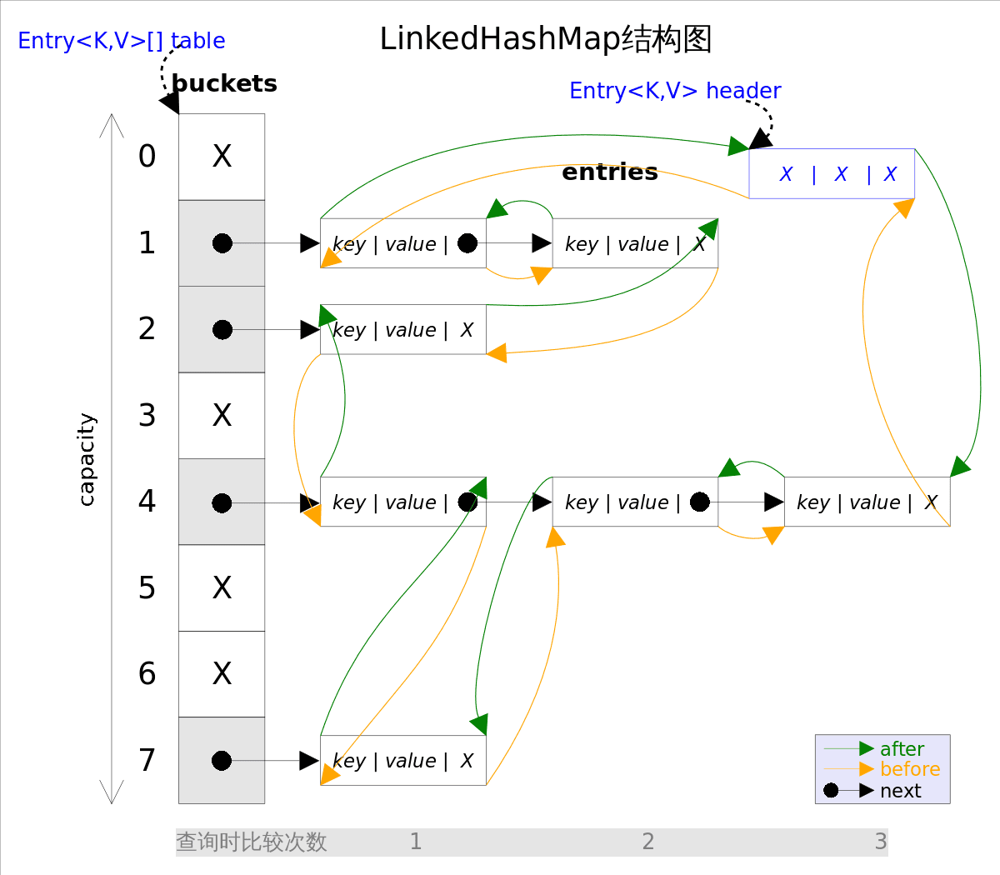

Ch02-Java Map 之 LinkedHashMap
February 13, 2017
LinkedHashMap 是 HashMap 的直接子类，二者唯一的区别是 LinkedHashMap 在 HashMap 的基础上，采用双向链表 (doubly-linked list) 的形式将所有 entry 连接起来，这样是为保证元素的迭代顺序跟插入顺序相同。
1. 底层数据结构 #
LinkedHashMap 实现了 Map 接口，即允许放入 key 为 null 的元素，也允许插入 value 为 null 的元素。其主体部分跟 HashMap 完全一样，多了 header 指向双向链表的头部 (是一个哑元)，该双向链表的迭代顺序就是 entry 的插入顺序。除了可以保迭代历顺序，这种结构还有一个好处 : 迭代 LinkedHashMap 时不需要像 HashMap 那样遍历整个 table，而只需要直接遍历 header 指向的双向链表即可，也就是说 LinkedHashMap 的迭代时间就只跟 entry 的个数相关，而跟 table 的大小无关。

2. FIFO Cache #
LinkedHashMap 除了可以保证迭代顺序外，还有一个非常有用的用法：可以轻松实现一个采用了 FIFO 替换策略的缓存。
class FIFOCache<K, V> extends LinkedHashMap<K, V>{
private final int cacheSize;
public FIFOCache(int cacheSize){
this.cacheSize = cacheSize;
}
// 当 Entry 个数超过 cacheSize 时，删除最老的 Entry
@Override
protected boolean removeEldestEntry(Map.Entry<K,V> eldest) {
return size() > cacheSize;
}
}